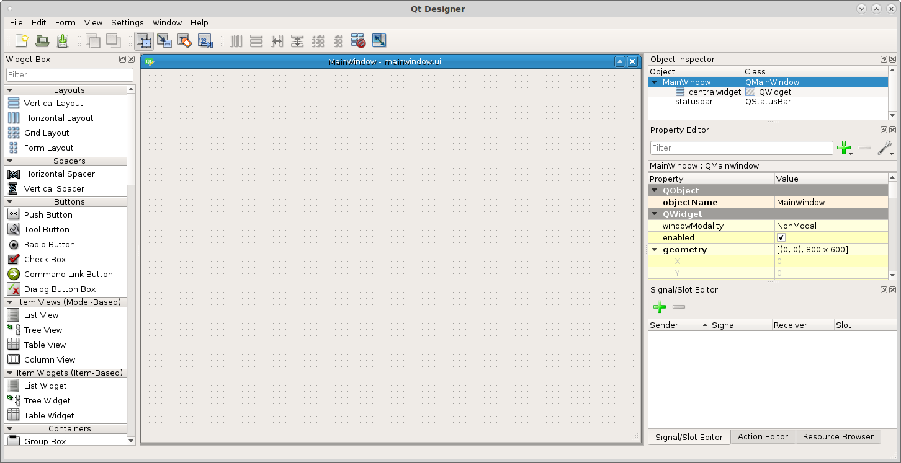
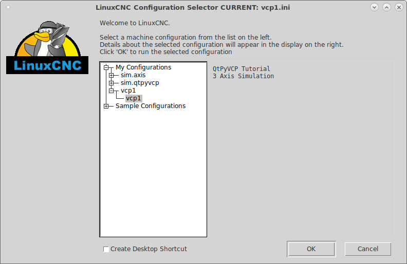
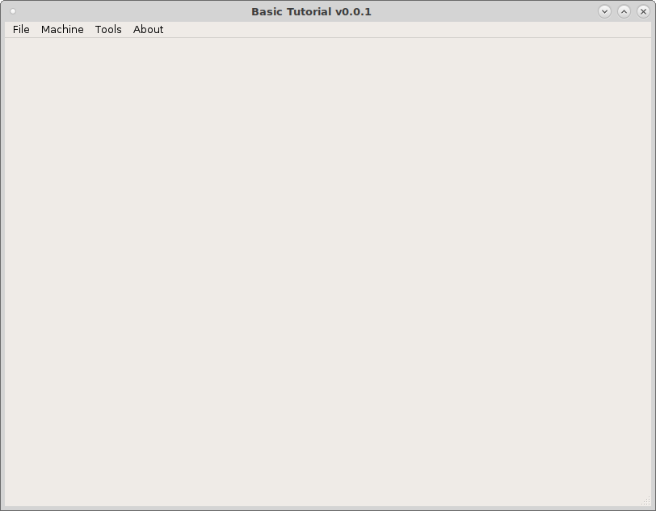
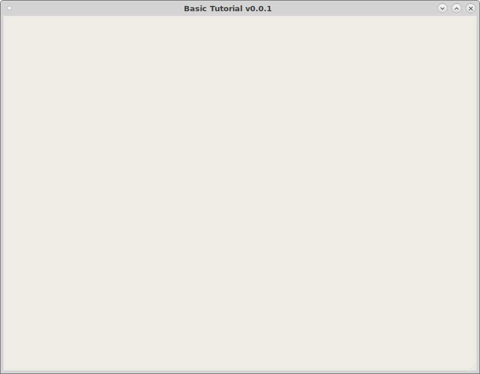

Clone and Prepare¶
Note
The following tutorial was done using Debian 9 (Stretch).
Before cloning you should have installed QtPyVCP as shown on the Installation page.
To start with you should clone the VCP Template. It has all the basic structure needed to build a VCP. In a terminal:
git clone https://github.com/kcjengr/vcp-template.git
To make copy the VCP Template for this tutorial in the terminal first change to the vcp-template directory then run tutorial.sh and use a new name that contains only letters, numbers and the underscore _. For this tutorial I used vcp1 so all examples will use that name. Pick yes to copy the LinuxCNC Configuration files.
cd vcp-template
./tutorial.sh
To edit the new template created from the vcp-template run the following command in a terminal. In this example the copied vcp-template was named vcp1.
editvcp vcp1
Now the VCP Template is open in the Qt Designer.
{kind=link}
Testing the VCP
To test your vcp start LinuxCNC and pick the vcp1 configuration. Make sure you check off Create Desktop Shortcut so you can launch the VCP with one click.
{kind=link}
Now you can see a blank VCP with a menu added.
{kind=link}
Navigate to the vcp location ~/vcp1/vcp1 and open the config.yml file with a text editor. Here you can change the author, version, description. Change the line menu: ( default_menubar ) to menu: null and save the file. Now run the vcp1 configuration and you see the menu has disappeared as this is a touch screen tutorial we don’t want a menu.
{kind=link}
The mainwindow.py is the file to add any custom methods.
Note
Python uses indentation to define blocks of code. You should not mix spaces and tabs in the same file.
The style.qss is a place to put css styles. In the following example it is for an ActionButton with the actionName of machine.estop.toggle and when it is checked change the background color to red. The important thing to note is the checked, by default an action button is not checkable so for this to work you must select that in the Property Editor.
ActionButton[actionName="machine.estop.toggle"]:checked{
background: rgb(239, 41, 41);
}